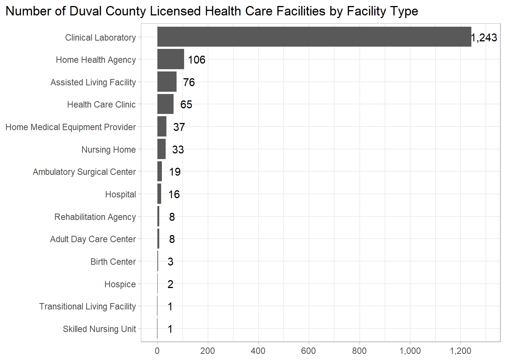

library(tidyverse)
library(gt)
library(scales)Duval’s FloridaHealthFinder Data
FloridaHealthFinder
a service of the Agency for Health Care Administration)
The code below takes the .csv file exported from the Facility/Provider Locator and creates a table with the counts by facility type used Duval County’s Community Health Assessment.
The following filters were used:
Facility/Provider Type: “ALL TYPES”
County: “Duval”
Load packages
Load data
fl_health_finder <- read_csv("2023-02-21_FloridaHealthFinder-FacilityLocator.csv")Create table
# Create a new dataframe with the three columns needed
fl_health_finder_s <- fl_health_finder %>%
select(`Facility Type`, Name, `License Status`)
# Create the counts by the selection of facility types:
#'Adult Day Care Center
#'Ambulatory Surgical Care Center
#'Assisted Living Facility
#'Birthing Center
#'Clinical Laboratory
#'Health Care Clinic
#'Home Health Agency
#'Home Medical Equipment Provider
#'Hospice
#'Hospitals
#'Nursing Homes
#'Rehabilitation Agency
#'Skilled Nursing Agency
#'Transitional Living Facility
# Before creating the table, create a vector with the correct facility types:
facilty_types <-
fl_health_finder_s %>%
drop_na() %>% # start by dropping empty rows (1)
distinct(`Facility Type`) %>% #find unique facility types
pull() %>% # create a vector
sort() %>% # sort in alphabetical order
.[-c(1,3,4,9:11,13,14,16,18,21,22,24:26,28)] # removed from vector
fl_health_finder_s %>%
drop_na() %>%
filter(`Facility Type` %in% facilty_types) %>%
count(`Facility Type`) %>%
rename("count" = n) %>%
gt()| Facility Type | count |
|---|---|
| Adult Day Care Center | 8 |
| Ambulatory Surgical Center | 19 |
| Assisted Living Facility | 76 |
| Birth Center | 3 |
| Clinical Laboratory | 1243 |
| Health Care Clinic | 65 |
| Home Health Agency | 106 |
| Home Medical Equipment Provider | 37 |
| Hospice | 2 |
| Hospital | 16 |
| Nursing Home | 33 |
| Rehabilitation Agency | 8 |
| Skilled Nursing Unit | 1 |
| Transitional Living Facility | 1 |
Create a plot of the data
fl_health_finder_s %>%
mutate(`Facility Type` = factor(`Facility Type`)) %>%
drop_na() %>%
filter(`Facility Type` %in% facilty_types) %>%
count(`Facility Type`) %>%
rename("count" = n) %>%
ggplot(aes(x = reorder(`Facility Type`, count), y = count)) +
geom_col() +
geom_text(aes(label = comma(count)), nudge_y = 50) +
coord_flip() +
theme_light() +
theme(axis.title.y = element_blank(),
axis.title.x = element_blank(),
plot.title.position = "plot") +
scale_y_continuous(n.breaks = 8, labels = comma_format()) +
labs(title = "Number of Duval County Licensed Health Care Facilities by Facility Type")
Plot for counts below 200
fl_health_finder_s %>%
mutate(`Facility Type` = factor(`Facility Type`)) %>%
drop_na() %>%
filter(`Facility Type` %in% facilty_types) %>%
count(`Facility Type`) %>%
rename("count" = n) %>%
filter(count < 200) %>%
ggplot(aes(x = reorder(`Facility Type`, count), y = count)) +
geom_col() +
geom_text(aes(label = comma(count)), nudge_y = 5) +
coord_flip() +
theme_light() +
theme(axis.title.y = element_blank(),
axis.title.x = element_blank(),
plot.title.position = "plot") +
scale_y_continuous(n.breaks = 8, labels = comma_format()) +
labs(title = "Number of Duval County Licensed Health Care Facilities by Facility Type", subtitle = "Facility types below the 200 count")